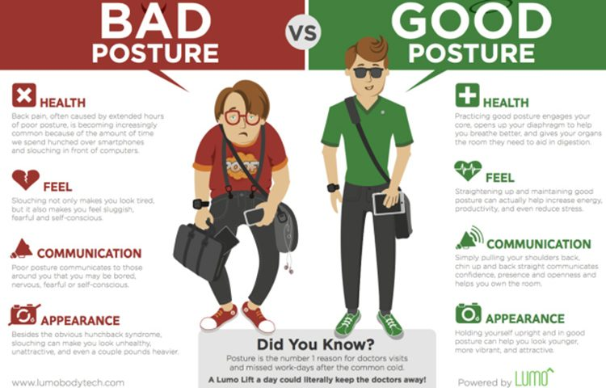

Presentation Structure
You may wish to capture the audience's interest and attention with a story or commentary on a current development that raises an important problem
dilemma.
, you may first wish to frame your talk with brief background,
and then swiftly transition into a concise explantion of the issue / problem or debate that your key message addresses.
either case, the next step in your introduction is to clearly state the purpose or key message of the talk, for example using the following prompts.
- Greet the audience
- Introduce:
- Yourself
- Your topic
- The purpose of your presentation
- Main body
- Conclusion
- Thank the audience, accept questions
how to stand
Presentation Body Language